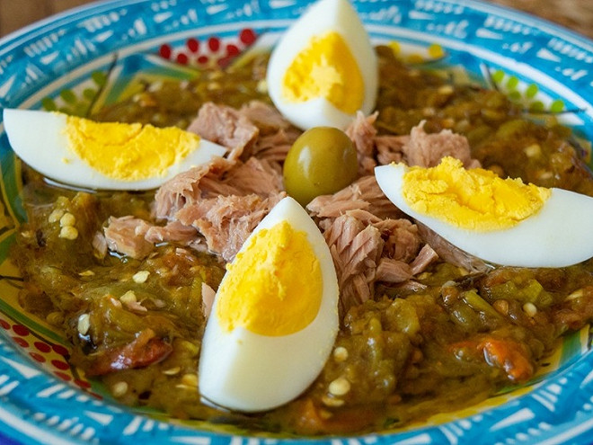
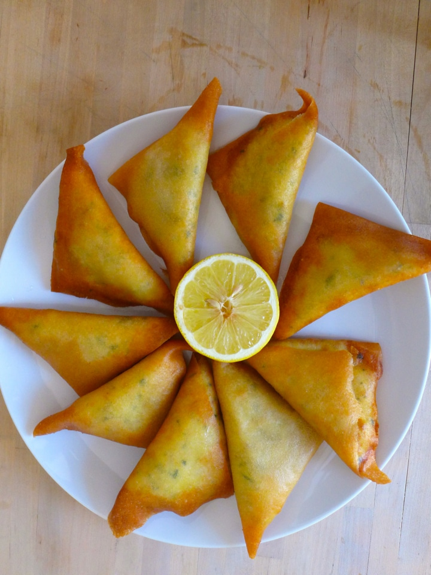
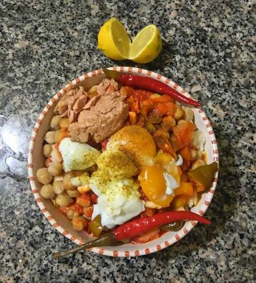
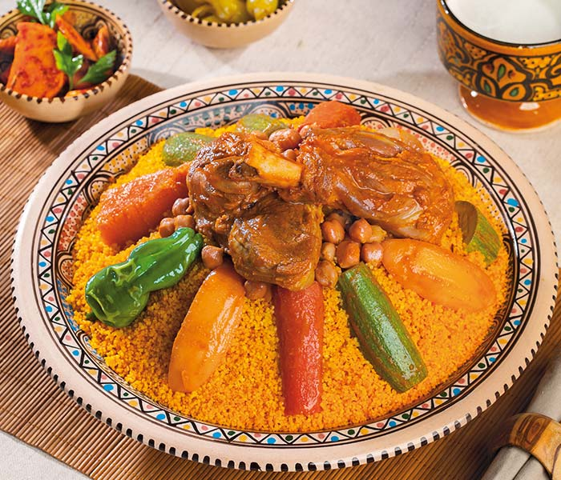
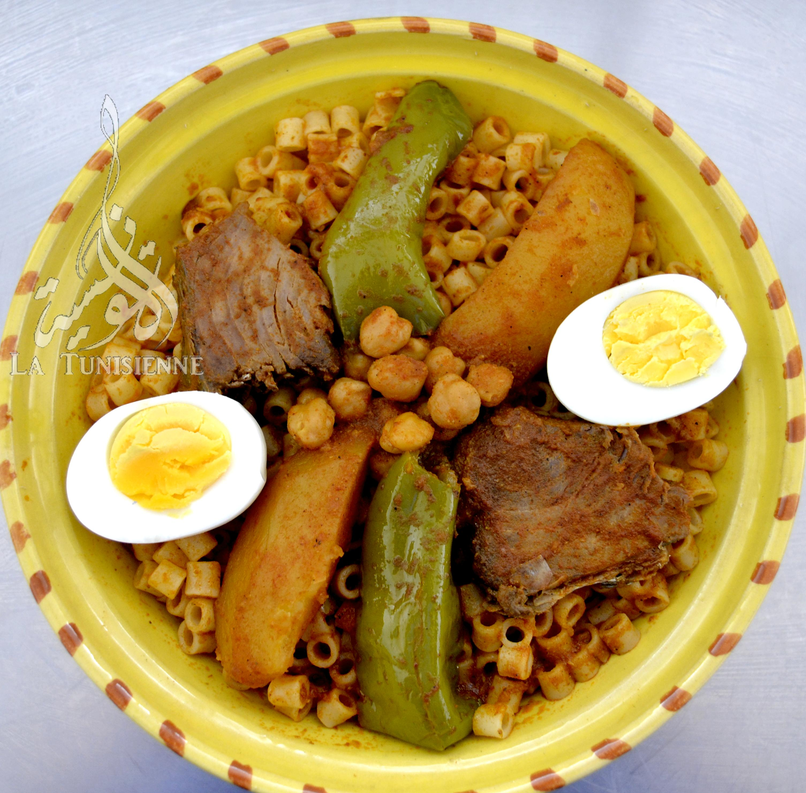
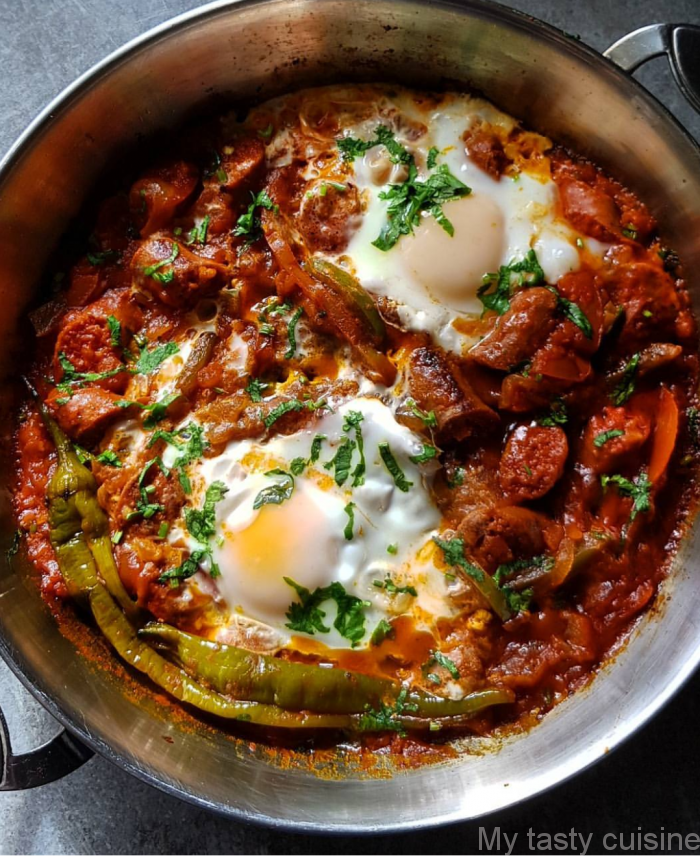
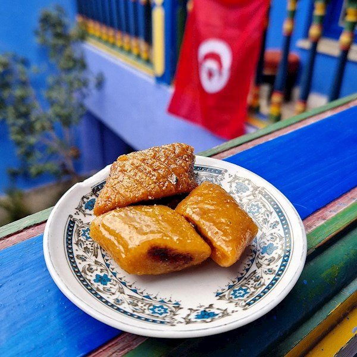
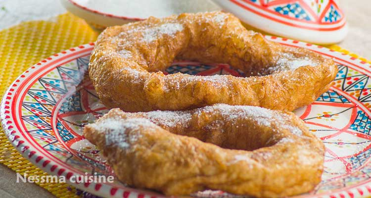
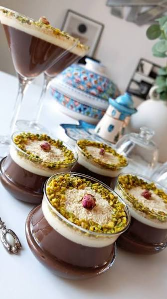

| Appetizers - مقبلات |
|

|
Salade Mechouia |
Poivrons grillés, tomates, ail et huile d'olive. |
6.000 |
|

|
Brik à l'œuf |
Brik croustillant farci avec œuf, thon et persil. |
3.500 |
|

|
Lablabi |
Soupe de pois chiches avec ail, cumin et harissa. |
5.000 |
| Main Courses - أطباق رئيسية |
|

|
Couscous Tunisien |
Couscous traditionnel avec légumes et viande. |
18.000 |
|

|
Macarouna Salsa |
Pâtes tunisiennes avec sauce tomate épicée. |
12.000 |
|

|
Ojja Merguez |
Œufs, merguez, tomates et piments. |
14.000 |
| Desserts - حلويات |
|

|
Makroudh |
Pâtisserie traditionnelle aux dattes et au miel. |
4.000 |
|

|
Bambalouni |
Beignet tunisien chaud avec sucre. |
3.000 |
|

|
Assidat Zgougou |
Dessert tunisien aux graines de pin d'Alep et crème. |
7.000 |